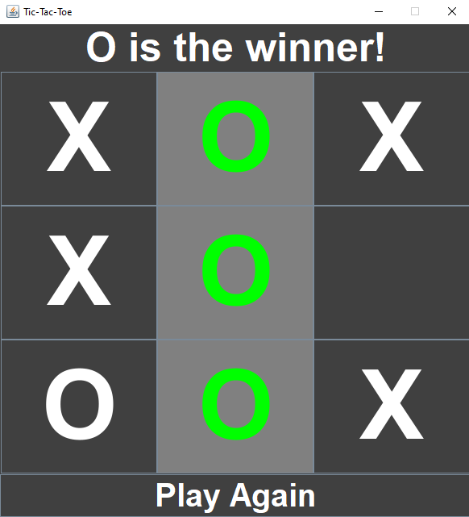
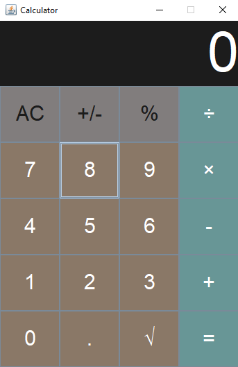

About Me
Hi! I'm Luke Dao-ines, an Information Technology student at the University of the Cordilleras,
currently pursuing a Bachelor of Science in Information Technology major in Web Technology.
I have a strong interest in technology and its potential to improve people's everyday lives.
I'm particularly fascinated by how websites, applications, and digital solutions can simplify
everyday tasks, improve productivity, and enhance the overall quality of life. For me, technology
is more than just a collection of tools and systems; it is an opportunity to solve real-world
problems, make services more accessible, and create experiences that are more convenient and
meaningful for people.
Throughout my studies, I have developed proficiency in Cisco networking and gained an
appreciation for the infrastructure and systems that keep people and technologies connected.
While networking is one of my strengths, I chose to major in Web Technology because it aligns
more closely with my personal passion: using technology to improve the quality of life.
I am interested in how well-designed websites and applications can make information easier to
access, processes more efficient, and everyday activities less complicated. I want to contribute
to creating digital solutions that are not only functional but also useful and valuable to the
people who use them.
Outside of academics, I enjoy playing video games, playing darts, and reading books. These
hobbies allow me to relax, challenge myself, think strategically, and explore different
perspectives. I also enjoy keeping up with advancements in technology, especially those that
focus on convenience, efficiency, accessibility, and practical problem-solving.
As I continue my journey in Information Technology, I aim to strengthen my skills in web
development, explore new tools and technologies, and gain practical experience by building
projects that address real needs. I believe that learning is a continuous process, and I am
always willing to experiment with new ideas, learn from challenges, and improve through
experience. My goal is to develop my technical abilities while understanding how the solutions
I create can make a meaningful difference.
Ultimately, I aspire to become a skilled IT professional who combines technical knowledge,
creativity, and problem-solving to build technology that genuinely benefits people. Whether
through web development, networking, or other areas of IT, I want my work to go beyond simply
making systems function. I want to help make everyday life easier, more efficient, and more
accessible through thoughtful and purposeful technology.
My Skills
 HTML
HTML
I have a foundational understanding of HTML and its role in structuring and organizing content on the web. As part of my journey in Web Technology, I am continuously learning how to create well-structured web pages using appropriate HTML elements, headings, paragraphs, links, images, and other essential components. I am working toward improving my ability to build accessible, organized, and user-friendly website structures. Although I am still developing my proficiency in HTML, I am eager to gain more hands-on experience, explore modern web development practices, and apply what I learn to create functional and engaging websites.
- Java
Java is my strongest programming language, and I have developed a solid understanding of programming fundamentals, object-oriented programming, and logical problem-solving. I enjoy using Java to develop programs and applications, implement algorithms, and find effective solutions to different programming challenges. Through writing and debugging code, I continue to strengthen my ability to create structured, readable, and maintainable programs. I am also interested in expanding my knowledge of software development and exploring more advanced Java concepts to improve my programming skills and become a more capable developer.
 Git
Git
I have knowledge of Git, a version control system used to track changes in code and manage project development. I understand how repositories and commits help organize development workflows and maintain project history. I use Git as a tool to support efficient code management and improve my development practices.
 MySQL
MySQL
I have experience using MySQL to manage and organize data in relational databases. I am familiar with the fundamentals of SQL queries and database operations, including retrieving, inserting, updating, and managing records. I aim to further develop my database management skills and learn how to build efficient data-driven applications.
- CISCO Networking/Windows Server Administration/COMPTIA+
I'm knowledgeable in Cisco networking and server administration, including network configuration, troubleshooting, and Windows Server management. I also hold the Cisco CCNA, CompTIA ITF+, and CompTIA A+ certifications, which have helped me build a solid foundation in networking, computer hardware, operating systems, and IT support. I'm always looking for opportunities to improve my skills and apply what I've learned to real-world situations.
Projects
Creating this Tic-Tac-Toe game was a challenging but rewarding experience for me, especially since I was still a beginner in Java programming. There were times when I struggled to understand how to connect the game logic with the graphical interface, so I relied on YouTube tutorials to guide me through the process. I learned by following the examples, trying things on my own, and figuring out what worked. Completing the project gave me a sense of accomplishment and made me realize that I can build something on my own as long as I'm willing to learn and keep trying, even when things get difficult.
Tic-Tac-Toe Project
I developed a calculator application using Java GUI that allows users to perform basic arithmetic operations, including addition, subtraction, multiplication, and division. The application uses clickable buttons for entering numbers and selecting operations, with a display to show the input and results. Through this project, I gained hands-on experience with GUI components, button event handling, and implementing calculation logic in Java. It also helped me understand how to make a program more interactive and user-friendly.
Calculator Project
I'm currently learning HTML and building my understanding of how websites are structured. As I explore different HTML elements, I'm learning how to organize content using headings, paragraphs, links, images, and lists. Since I'm still a beginner, I use practice exercises to experiment with what I've learned and improve my skills step by step. This journey is helping me build a strong foundation in web development and prepare for more advanced projects in the future.
HTML Project